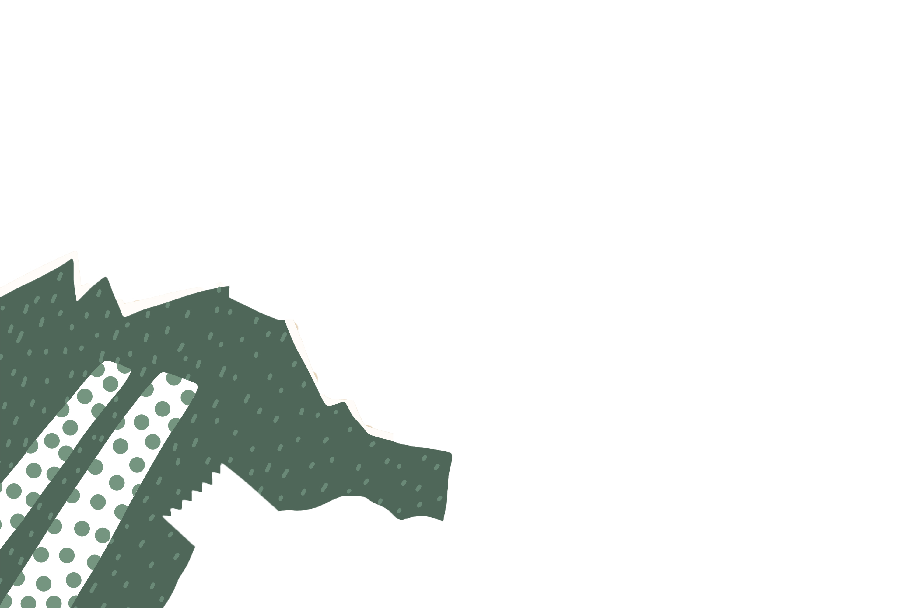
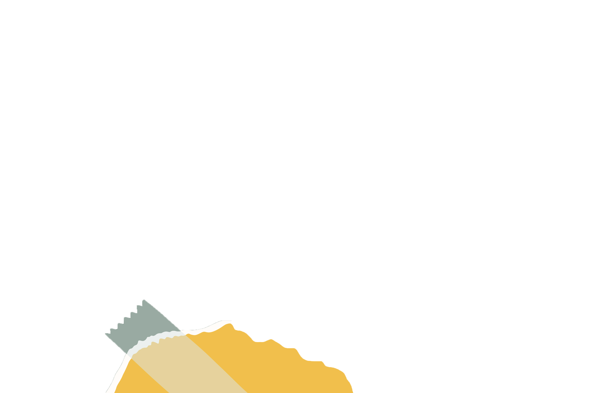
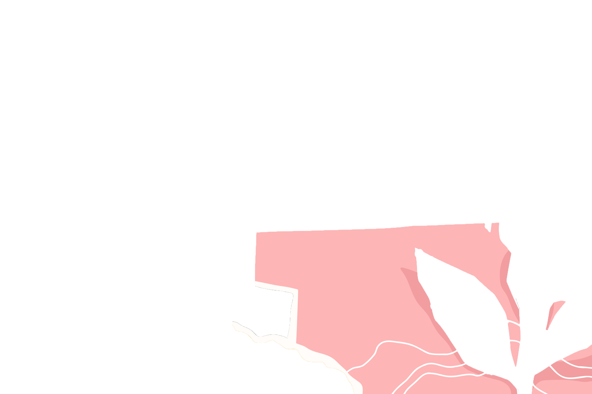

Anna's Corner
  In a completely unrelated note I have always also loved pirates
Meet the Developers: Anna
Hello! My name is Anna (official papers will tell you my name is Vasiliki Anna which tends to confuse people but
it is simple really: this was a move to please both my grandmothers as I am an only child and therefore like some fabled
protagonist on a classical hero journey I am tasked to carry the entire family legacy on my back). I am a June born baby
and freshly out of my quarter life crisis, therefore at the age where you stop asking women how old they are, and post-said
crisis clarity is the exact reason why I am here.
I have been the stereotypical definition of a nerd for as far back as I can remember and as a proud introvert
I have always had a very close relationship with technology: from my first PSP when I was 5 to spending days upon days
on stack overflow as the years started going by and the Internet slowly became more and more hostile to use.
(Am I being dramatic? Perhaps, but I am old enough to remember an age when youtube would not bombard you with 50 hour-long
ads per video, back when you didn't need to dive deep for scripts to access your favorite novels online and during
the golden age of Flash Player - rip you will always be remembered).
This is where it all began
I knew I was going into STEM very early on, but here's the catch: I was told all the nerds go to med school and I was a good student so I thought hey, this might be the place for me! Unfortunately what they don't tell you is med school has the lame, boring kind of nerds and it is depression central over there so I am trying this again by coming here where the actual cool nerds are. So far I seem to fit right in! My dream is to one day work in a sector adjacent to neuro coding and approach the mapping of the human brain from a technological perspective with the view of research application in order to improve people's daily lives. I am highly inspired in this by an older friend of mine who worked on the development of the Nymi Band which uses Biometric data to connect people to multiple applications, systems, and networks. As fun as it is to imagine a future where robots are our esteemed overlords, I am not jaded enough yet not to believe in man and machine walking hand in hand and I want to add my own little paint stroke to that. (Also I want to flex on my ex uni classmates).
About this project
The main observation I have to make on this project is this: Despite the fact that it is the one assignment I have probably spent
the most time on, not just in this college so far, or this year, but in my entire academic career, and we are speaking in terms
of hours upon hours at a time researching, trying to learn new things and experimenting/implementing them, it is still probably
the only assignment that has never for a moment felt like a chore. A huge part of that is due to my excellent team and two partners
in crime, the cooperation with whom has been harmonious to a near flawless extent. From ribbing off on each other's creativity and
sense of humor which is necessary for the concept of this site, as we didn't want to simply create a sterile informative
environment but something more fun, to their sense of responsibility and work ethic I would ever be so lucky to work with
colleagues like these further ahead in my career. The basic css templates were a collaborative effort of hours of fun productive
teamwork and I genuinely dont think we could have achieved such an effect if we had simply each done our parts in isolation and
then haphazardly stitched it together.
When it comes to my personal contribution, something I love in websites is motion dynamism and interactivity, so i personally researched
and implemented everything regarding the submenus in the navbar (I am especially fond of the transition property with hover - I
have used it on elements A Lot and that includes all the posters and images slightly popping out when the user moves the mouse over
them). I was also in charge of the pop-up window effect when you click on the main movie poster and the slideshow that shows up on
said popup window. I also got heavily inspired by the carousel which was showcased with bootsrap in the final i2wt lab and was
determined to find a way to implement it without a framework but with pure css and js code which is how the carousel in the genre
pages as well as the critics' reviews in the individual movie pages came about! Lastly, I was in charge of editing all images that
were necessary such as the sidebar images and some erroneously generated ai posters as I am adept at using photoshop and I also
fixed some details such as the zoom cursor above the main poster and the favicon because it is my motto that attention to detail
makes for perfection.
Resources
When it comes to resources used for this project the following should be mentioned:
- Freepik, for the vector image in my own personal page.
- w3schools, Stack Overflow and MDN-Docs, which were basically my very first go-to for every single problem-solving instance.
- This Video, for inspiration regarding the card carousel on my personal page
- Google Fonts, for the Playfair Display font used on this page.
- This excellent video, on Parallax scrolling webpages for my own page
- This video, on flexbox functionality, which was suggested to us by our team leader and its study was invaluable so as to build our entire site
- This video, on nav bars with drop down menus
- This video, to familiarise myself with responsive pop-up image galleries
- This site, for help with the carousel
- This site, to study buttons with pseudo-elements
- Freepik, for a copyright free background image of dust particles in the genre templates
- and of course, Dall-E image creator (via Bing) and ChatGPT 3.5, to generate the movie posters and seek assistance regarding the satirical plots and scenarios used.